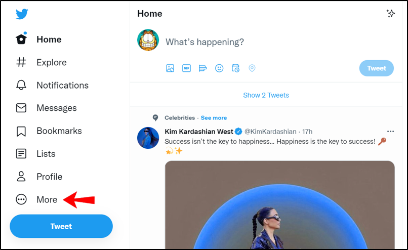
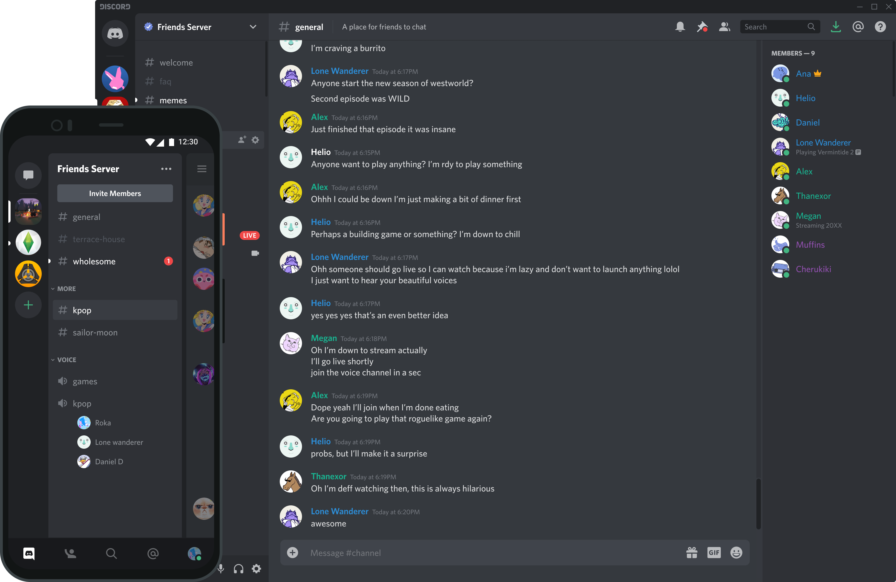

Facebook es la principal red social que existe en el mundo. Una red de vínculos virtuales, cuyo principal objetivo es dar un soporte para producir y compartir contenidos. Llegó para ampliar las posibilidades de relación social y causó una revolución sensible en el mundo de las comunicaciones. El marketing no fue ajeno a este cambio encontrando en esta modalidad un terreno fértil para nuevos conceptos y abordajes.

Twitter es una red social gratuita y cualquier persona puede crearse una cuenta o perfil para compartir opiniones. También se utiliza como fuente de información en tiempo real sobre temas de actualidad. Los usuarios de Twitter permanecen interconectados al publicar "tweets", que constan de 280 caracteres o menos y pueden contener ideas y varios tipos de información, como fotos, videos y enlaces a artículos.
DISCORD
Discord es una aplicación gratuita de comunicación que te permite usar chat de voz, video y texto con tus amigos, comunidades de juegos y desarrolladores. Tiene cientos de millones de usuarios, lo que la convierte en una de las formas más populares de conectarse con personas en línea. Discord se puede usar en casi todas las plataformas y dispositivos más populares, entre ellos Windows, macOS, Linux, iOS, iPadOS, Android y navegadores web.
